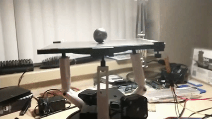
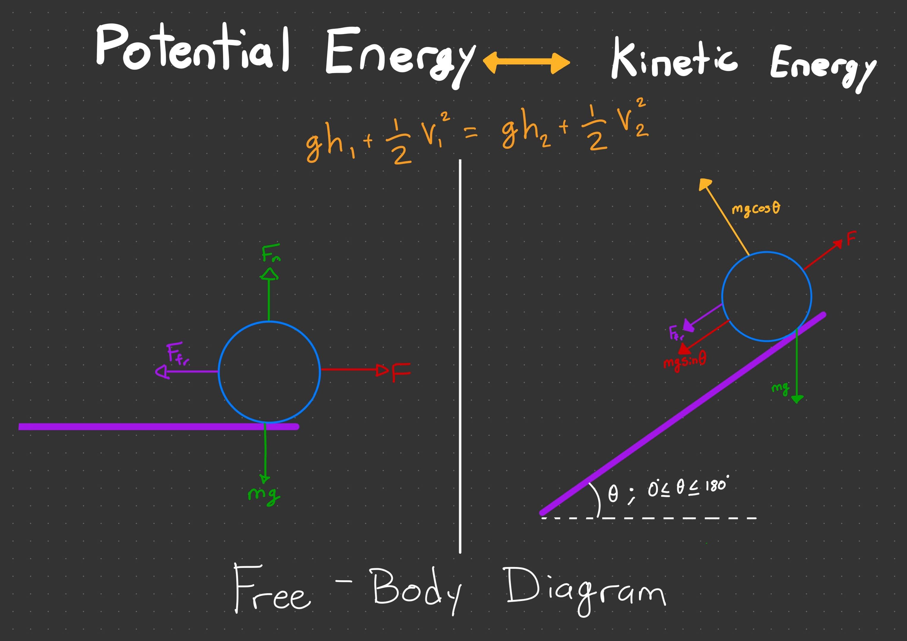
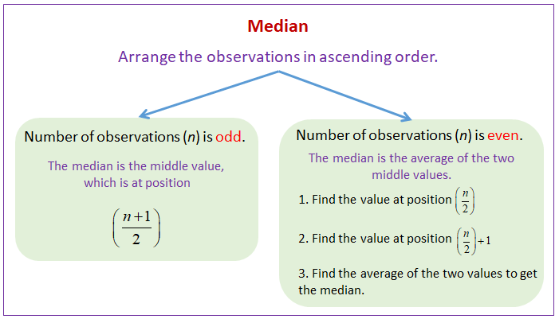
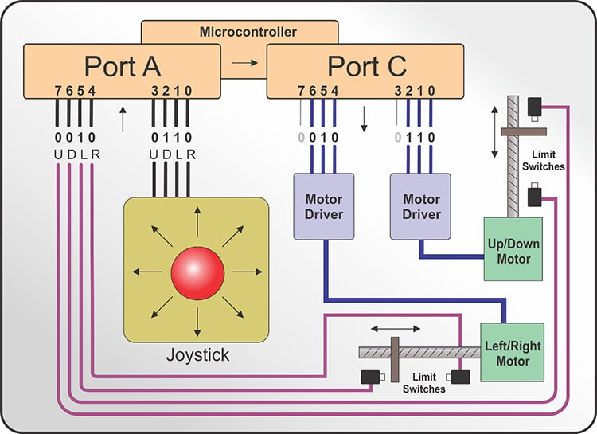
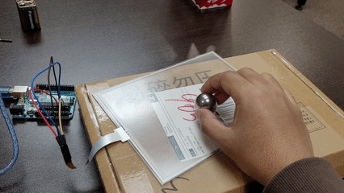
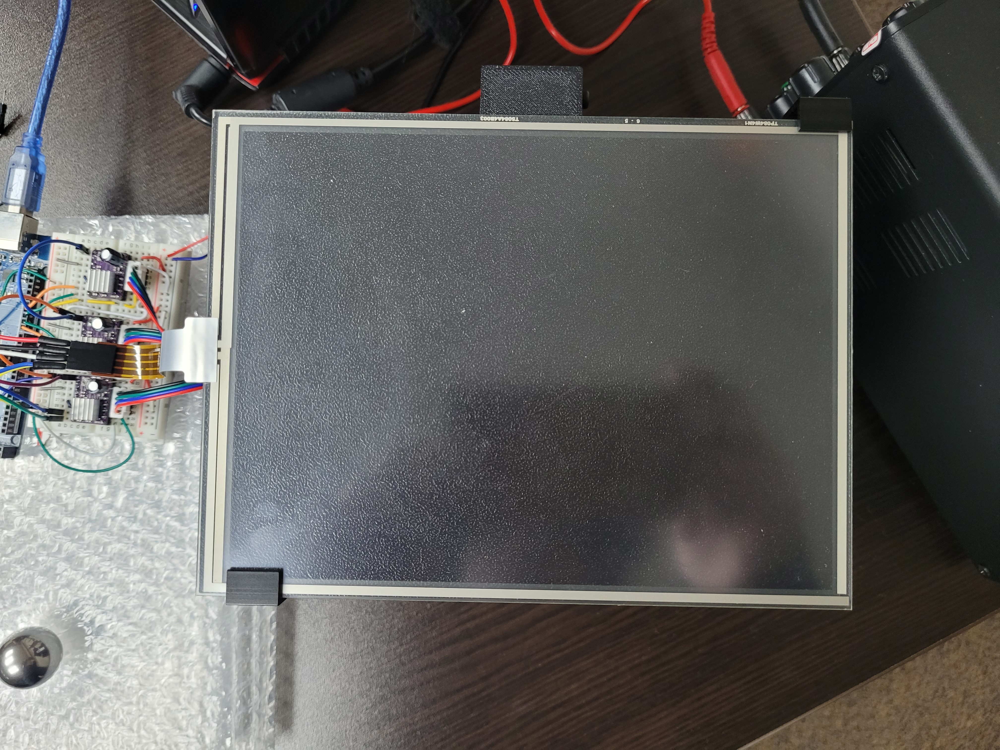
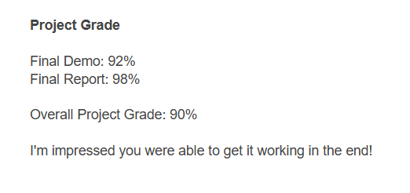

3RRS Ball Balancing Robot

Problem Statement
Balancing dynamic systems in motion is a challenge in robotics and embedded systems. This requires precise motion control and a fast reaction to the position of the ball. This project builds on open source material.The reference project used a microcontroller called the Teensy 4.1 which operates at a frequency of 600 MHz. The microcontroller in their project is too fast for the task and spends most of its clock cycle on idle. It also provides an opportunity to apply and demonstrate course material from the Intro to Real-Time Embedded System course.
Project Scope
Optimized the program to reduce computational load, so the prototype can operate on a slower microcontroller, the Arduino Mega (16 MHz) instead of a Teensy (600 MHz). Optimized the control software of a 3RRR ball balancing robot to operate on an Arduino Mega (16MHz) instead of a Teensy (600 MHz). Improve design from this project 'https://www.aaedmusa.com/projects/ball-balancer'.
Open Source Resources
Many people in the community had their approach to this problem this list is to give credit to the people who we've used resources from. aaed muda: 'https://www.aaedmusa.com/projects/ball-balancer'.
Technical Background
Free Body Diagram of gravity's effect on the steel bearing ball
The manipulator will change the orientation of the platform on which the steel ball is placed. The system utilizes the sinusoidal component of the force of gravity acting on the ball. It is how the manipulator applies a force to change the position of the ball.
Data Filtering: Moving Mediam
A Moving Median is used to remove false readings from the resistive touch screen .Definition
A Moving Median is a data smoothing technique used to remove "noise" (random fluctuations) or extreme outliers from a sequence of data points
Direct Port Manipulation
The method we used to send readings to the microcontroller faster.Definition
Direct port manipulation is the method of controlling a microcontroller's input/output pins by interacting directly with its hardware registers instead of using slow software functions like digitalWrite().
Process


Process Description
Map the Cartesian plane of the resistive touchscreen. Collect a data set. Investigate the causes of false readings. Test data input filters to omit false readings. Implement direct port manipulation in the open-source code for the Arduino Mega microcontroller. Test the manipulator's reaction speed, comparing data input through direct port manipulation and digital read, to explore whether the change is necessary.
Troubleshooting
Result
Used direct port manipulation for the Arduino Mega to improve data acquisition speed, and applied signal filtering to eliminate false readings.
